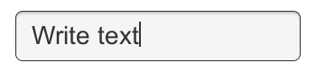
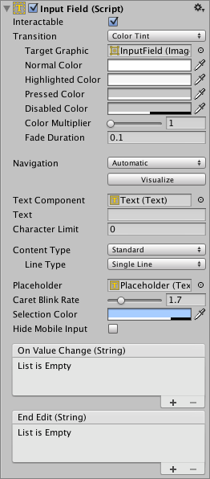

Input Field
An Input Field is a way to make the text of a Text Control editable. Like the other interaction controls, it's not a visible UI element in itself and must be combined with one or more visual UI elements in order to be visible.



Properties
| Property: | Function: | |
|---|---|---|
| Interactable | A boolean that determines if the Input Field can be interacted with or not. |
|Transition ||Transitions are used to set how the input field transitions when Normal, Highlighted, Pressed or Disabled. | |Navigation || Properties that determine the sequence of controls. See Navigation Options.|
|TextComponent ||A reference to the Text element used as the contents of the Input Field|
|Text ||Starting Value. The initial text placed in the field before editing begins. |
|Character Limit ||The value of the maximum number of characters that can be entered into the input field.|
|Content Type ||Define the type(s) of characters that your input field accepts| | |Standard |Any charcter can be entered.| | |Autocorrected |The autocorrection determines whether the input tracks unknown words and suggests a more suitable replacement candidate to the user, replacing the typed text automatically unless the user explicitly overrides the action.| | |Integer Number |Allow only whole numbers to be entered.| | |Decimal Number |Allow only numbers and a single decimal point to be entered.| | |Alphanumeric |Allow both letters and numbers. Symbols cannot be entered.| | |Name |Automatically capitalizes the first letter of each word. Note that the user can circumvent the capitalization rules using the Delete key.| | |Email Address |Allows you to enter an Alphanumeric string consisting of a maximum of one @ sign. periods/baseline dots cannot be entered next to each other. | | |Password* |Conceals the characters inputed with an asterisk. Allows symbols.| | |Pin |Conceals the characters inputed with an asterisk. Only allows only whole numbers to be entered.| | |Custom |Allows you to customise the Line Type, Input Type, Keyboard Type and Character Validation.|
|Line Type ||Defines how test is formatted inside the text field.| | |Single Line |Only allows text to be on a single line.| | |Multi Line Submit |Allows text to use multiple lines. Only uses a new line when needed.| | |Multi Line Newline |Allows text to use multiple lines. User can use a newline by pressing the return key.|
|Placeholder ||This is an optional ‘empty’ Graphic to show that the Input Field is empty of text. Note that this ‘empty' graphic still displays even when the Input Field is selected (that is; when there is focus on it). eg; "Enter text...".|
|Caret Blink Rate ||Defines the blink rate for the mark placed on the line to indicate a proposed insertion of text.|
|Selection Color ||The background color of the selected portion of text.|
|Hide Mobile Input (iOS only) ||Hides the native input field attached to the onscreen keyboard on mobile devices. Note that this only works on iOS devices.| | | | |
Events
| Property: | Function: |
|---|---|
| On Value Change | A UnityEvent that is invoked when the text content of the Input Field changes. The event can send the current text content as a string type dynamic argument. |
| End Edit | A UnityEvent that is invoked when the user finishes editing the text content either by submitting or by clicking somewhere that removes the focus from the Input Field. The event can send the current text content as a string type dynamic argument. |
Details
The Input Field script can be added to any existing Text control object from the menu (Component > UI > Input Field). Having done this, you should also drag the object to the Input Field's Text property to enable editing.
The Text property of the Text control itself will change as the user types and the value can be retrieved from a script after editing. Note that Rich Text is intentionally not supported for editable Text controls; the field will apply any Rich Text markup instantly when typed but the markup essentially "disappears" and there is no subsequent way to change or remove the styling.
Hints
- To obtains the text of the Input Field, use the text property on the InputField component itself, not the text property of the Text component that displays the text. The text property of the Text component may be cropped or may consist of asterisks for passwords.